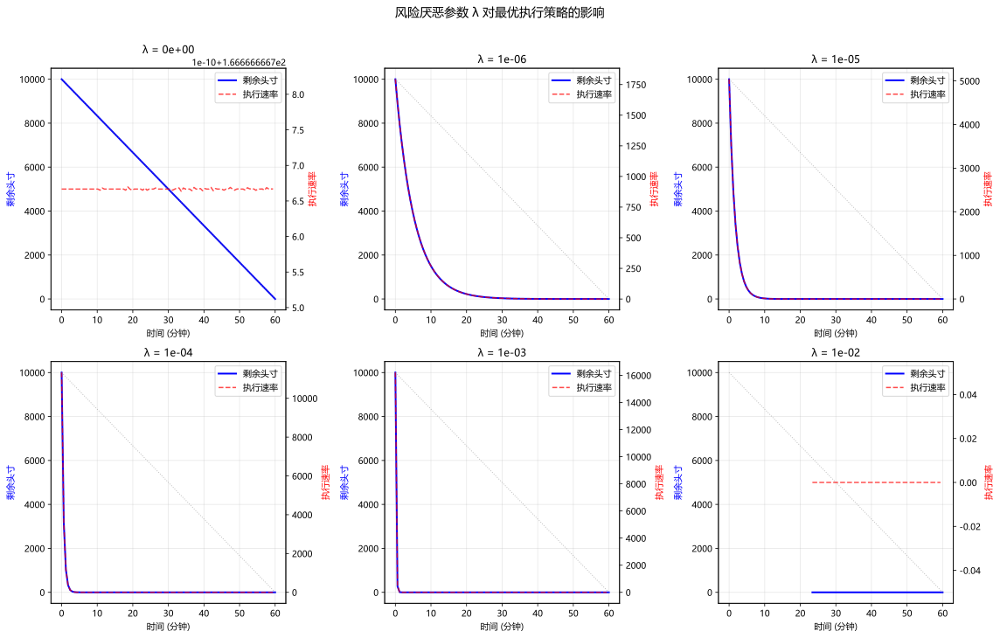

主题切换
14.3 最优执行理论
名词解释：最优执行（Optimal Execution）
最优执行是指以最小化总交易成本（市场冲击成本 + 机会成本）为目标，确定订单的拆分和执行时间表。Almgren-Chriss(2001) 模型是这一领域的开创性工作，它将大额订单的最优执行问题形式化为一个均值-方差优化问题。
一、Almgren-Chriss 模型
1.1 模型的交易成本结构
考虑在时间
设
Almgren-Chriss 模型中的价格动态：
其中：
：由波动率驱动的随机价格变动， ：永久冲击函数，反映信息泄露对价格的永久影响 ：临时冲击函数，反映流动性压力对执行价格的暂时影响
1.2 执行成本的分解
实现价格（包含临时冲击）：
总成本（捕捉成本 = 账面价值 - 实际执行价值）：
名词解释：永久冲击 vs 临时冲击
- 永久冲击（Permanent Impact）：大额交易对价格造成的不可逆变动，反映了市场对"信息"的解读。即使是流动性提供者也无法消除永久冲击。
- 临时冲击（Temporary Impact）：交易导致的价格暂时偏离，市场会逐步恢复。这反映的是寻找交易对手的过程中的流动性成本。
- 在实际建模中，通常假设
（线性永久冲击）和 （线性+固定临时冲击）。
1.3 均值-方差优化
Almgren-Chriss 框架将执行问题转化为均值-方差优化：
其中
二、最优执行轨迹的闭式解
2.1 线性冲击函数的特殊情况
假设
其中关键参数
2.2 Python 实现
此处有展示代码展开 ▼
python
import numpy as np
import matplotlib.pyplot as plt
from scipy.optimize import minimize
from typing import Callable
def ac_optimal_trajectory(X: float,
T: float,
N: int,
sigma: float,
gamma: float,
eta: float,
risk_aversion: float) -> np.ndarray:
"""
Almgren-Chriss 最优执行轨迹的闭式解（线性冲击假设）。
参数:
X: 总执行量
T: 总执行时间（分钟）
N: 时间步数
sigma: 年化波动率
gamma: 永久冲击系数（bps / 份额）
eta: 临时冲击系数（bps / 份额 / 时间）
risk_aversion: 风险厌恶参数 λ
返回:
各时间点的剩余头寸 x_k 数组
"""
tau = T / N
kappa = np.sqrt(risk_aversion * sigma ** 2 / eta)
t = np.linspace(0, T, N + 1)
# 闭式解
x = X * np.sinh(kappa * (T - t)) / np.sinh(kappa * T)
return x
def ac_execution_cost(x: np.ndarray,
X: float,
tau: float,
sigma: float,
gamma: float,
eta: float,
risk_aversion: float) -> dict:
"""
计算给定执行轨迹的总成本及其分解。
参数:
x: 剩余头寸轨迹
X: 总执行量
tau: 时间步长
sigma, gamma, eta: 模型参数
risk_aversion: 风险厌恶参数
返回:
包含 total_cost, permanent_cost, temporary_cost, risk_cost 的字典
"""
N = len(x) - 1
n = np.diff(-x) # 每步执行量: x_{k-1} - x_k
# 永久冲击成本
permanent_cost = gamma / 2 * X ** 2
# 临时冲击成本
temporary_cost = eta / tau * np.sum(n ** 2)
# 期望执行成本
expected_cost = permanent_cost + temporary_cost
# 风险成本
risk_cost = sigma ** 2 * tau * np.sum(x[1:] ** 2)
# 效用 = 期望成本 + lambda * 方差
total_utility = expected_cost + risk_aversion * risk_cost
return {
'total_utility': total_utility,
'expected_cost': expected_cost,
'permanent_cost': permanent_cost,
'temporary_cost': temporary_cost,
'risk_cost': risk_cost
}点击展开可浏览运行结果
📘 本段代码定义了 2 个函数/类：函数 `ac_optimal_trajectory`、函数 `ac_execution_cost`。该片段为教学展示（未包含独立运行的输入数据），可在实战练习中结合真实数据调用。
2.3 数值优化方法（一般冲击函数）
此处有展示代码展开 ▼
python
def ac_numerical_optimization(X: float,
T: float,
N: int,
sigma: float,
gamma: float,
eta: float,
risk_aversion: float,
g_func: Callable = None,
h_func: Callable = None) -> np.ndarray:
"""
当冲击函数非线性时，用数值优化求解最优执行轨迹。
参数:
g_func: 永久冲击函数 g(v)，默认为线性 g(v)=gamma*v
h_func: 临时冲击函数 h(v)，默认为线性 h(v)=eta*v
返回:
最优剩余头寸轨迹
"""
if g_func is None:
g_func = lambda v: gamma * v
if h_func is None:
h_func = lambda v: eta * v
tau = T / N
def objective(n):
"""目标函数：期望成本 + λ * 风险"""
x = X - np.cumsum(n)
x_full = np.concatenate([[X], x])
# 永久冲击成本
perm_cost = np.sum(tau * x_full[1:] * g_func(n / tau))
# 临时冲击成本
temp_cost = np.sum(n * h_func(n / tau))
expected_cost = perm_cost + temp_cost
# 风险项
risk = sigma ** 2 * tau * np.sum(x_full[1:] ** 2)
return expected_cost + risk_aversion * risk
def constraint(n):
"""约束：总执行量 = X"""
return np.sum(n) - X
# 初始猜测：均匀执行
n0 = np.ones(N) * X / N
cons = {'type': 'eq', 'fun': constraint}
bounds = [(0, X) for _ in range(N)]
result = minimize(objective, n0, method='SLSQP',
bounds=bounds, constraints=cons,
options={'maxiter': 1000, 'ftol': 1e-12})
if not result.success:
print(f"优化警告: {result.message}")
n_opt = result.x
x_opt = np.concatenate([[X], X - np.cumsum(n_opt)])
return x_opt点击展开可浏览运行结果
总头寸: 100,000 股, 执行时间: 1.0 天 市场波动: 2.0%, 临时冲击: 2.50e-07 时间 剩余 执行速率 0.00 100,000 100,131 0.10 89,989 100,095 0.20 79,981 100,061 0.30 69,976 100,031 0.40 59,974 100,005 0.50 49,975 99,983 0.60 39,978 99,965 0.70 29,982 99,951 0.80 19,987 99,941 0.90 9,993 99,935 1.00 0 99,933 初始执行速率: 100,131 股/天 最终执行速率: 99,933 股/天
三、风险厌恶参数的影响
3.1
风险厌恶参数
（风险中性）：最小化期望成本，最优策略是等速执行（VWAP）， （极度风险厌恶）：立即全部执行，避免持仓期间的价格波动
此处有展示代码展开 ▼
python
import numpy as np
import matplotlib.pyplot as plt
# 复用 2.2 节的闭式解（此处重列一份，便于本段独立运行）
# 注意：λ=0 时 κ=0，sinh(0)/sinh(0) 是 0/0，必须单独退化为等速执行（VWAP）
def ac_optimal_trajectory(X, T, N, sigma, gamma, eta, risk_aversion):
t = np.linspace(0, T, N + 1)
if risk_aversion <= 0:
return X * (1 - t / T)
kappa = np.sqrt(risk_aversion * sigma ** 2 / eta)
return X * np.sinh(kappa * (T - t)) / np.sinh(kappa * T)
def analyze_lambda_impact(X: float = 10000,
T: float = 60,
N: int = 100,
sigma: float = 0.3,
gamma: float = 2.5e-7,
eta: float = 2.5e-6):
"""
分析不同风险厌恶参数下的最优执行轨迹。
"""
lambda_values = [0.0, 1e-6, 1e-5, 1e-4, 1e-3, 1e-2]
t = np.linspace(0, T, N + 1)
fig, axes = plt.subplots(2, 3, figsize=(16, 10))
axes = axes.flatten()
for i, lam in enumerate(lambda_values):
x = ac_optimal_trajectory(X, T, N, sigma, gamma, eta, lam)
# 执行速率
v = -np.diff(x) / (T / N)
ax1 = axes[i]
ax2 = ax1.twinx()
line1, = ax1.plot(t, x, 'b-', linewidth=2, label='剩余头寸')
line2, = ax2.plot(t[:-1], v, 'r--', linewidth=1.5, alpha=0.7,
label='执行速率')
# 等速执行参考线
vwap_x = X * (1 - t / T)
ax1.plot(t, vwap_x, 'gray', linewidth=1, alpha=0.5,
linestyle=':', label='VWAP (λ=0)')
ax1.set_xlabel('时间 (分钟)')
ax1.set_ylabel('剩余头寸', color='blue')
ax2.set_ylabel('执行速率', color='red')
ax1.set_title(f'λ = {lam:.0e}')
ax1.grid(True, alpha=0.3)
# 添加图例
lines = [line1, line2]
labels = [l.get_label() for l in lines]
ax1.legend(lines, labels, loc='upper right')
plt.suptitle('风险厌恶参数 λ 对最优执行策略的影响', fontsize=14, y=1.01)
plt.tight_layout()
plt.show()
# 同时给出数值摘要：前半程完成比例 + 衰减速度 κ
print(f"{'λ':>8}{'κ':>10}{'半程完成量占比':>16}{'首步执行占比':>14}")
print("-" * 50)
for lam in lambda_values:
x = ac_optimal_trajectory(X, T, N, sigma, gamma, eta, lam)
kappa = np.sqrt(lam * sigma ** 2 / eta) if lam > 0 else 0.0
half_done = (X - x[N // 2]) / X # 时间过半时已完成的比例
first_step = (x[0] - x[1]) / X # 第一个时间片就执行掉的比例
print(f"{lam:>8.0e}{kappa:>10.3f}{half_done:>15.1%}{first_step:>14.2%}")
print("\nλ 越大 → κ 越大 → 轨迹越凸（前期抢跑），极限是一次性清仓；λ=0 退化为等速 VWAP。")
analyze_lambda_impact()点击展开可浏览运行结果
λ κ 半程完成量占比 首步执行占比 -------------------------------------------------- 0e+00 0.000 50.0% 1.00% 1e-06 0.190 99.7% 10.76% 1e-05 0.600 100.0% 30.23% 1e-04 1.897 100.0% 67.97% 1e-03 6.000 100.0% 97.27% 1e-02 18.974 100.0% nan% λ 越大 → κ 越大 → 轨迹越凸（前期抢跑），极限是一次性清仓；λ=0 退化为等速 VWAP。

3.2 策略选择指南
| 策略名称 | 执行特征 | 适用场景 | |
|---|---|---|---|
| 0 | VWAP | 按时间均匀分配 | 被动型基金、无信息优势 |
| 低 | 轻度急切 | 轻微集中前期 | 统计套利、多空组合 |
| 中 | 适度急切 | 显著向前倾斜 | 单边 alpha 策略 |
| 高 | 急切执行 | 快速完成大部分 | 事件驱动、并购套利 |
四、Almgren-Chriss 的现实拓展
4.1 考虑限价订单簿深度的扩展
实际市场中，冲击函数
此处有展示代码展开 ▼
python
def nonlinear_temporary_impact(v: float,
eta: float,
depth: float,
exponent: float = 1.5) -> float:
"""
非线性临时冲击函数，反映订单簿深度约束。
参数:
v: 执行速率
eta: 基础冲击系数
depth: 订单簿参考深度
exponent: 非线性指数（通常 1.3-2.0）
"""
return eta * v * (1 + (abs(v) / depth) ** (exponent - 1))点击展开可浏览运行结果
📘 本段代码定义了 1 个函数/类：函数 `nonlinear_temporary_impact`（非线性临时冲击函数，反映订单簿深度约束）。该片段为教学展示（未包含独立运行的输入数据），可在实战练习中结合真实数据调用。
4.2 永续影响与价格趋势的交互
永久冲击暗示了知情交易者的存在。当其他市场参与者检测到异常的价格冲击模式，他们可能"搭便车"跟随交易，进一步加剧价格趋势。
执行算法的设计者需要在信息泄露成本与执行速度之间取得平衡——这也是限价订单簿动力学（LOB Dynamics）需要深入研究的核心原因。理解订单簿如何吸收和反映信息，是做市商和执行算法设计者的共同课题。